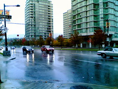

Entry #13: The Pains Of (Not) Owning A Car
The following is a guest entry by noted podcaster and new media guru, John Bollwitt.
The true reason why I’m making this post is to make a guest appearance on Duane’s blog for Blogathon 2008. In fact, he tells me that the only way he’ll give me a ride home so I can go to bed is to make said post. But in a moment of “behold the power of blogging”, it made me recall a thought I had today about owning a car in general.
 Plain and simple, Rebecca and I don’t own a car. Part of it is by choice, the other is the simplicity of keeping cost of living down. We haven’t had a vehicle to be called our own for a few years now, relying heavily on transit. That means getting from point A to B is sometimes good and sometimes spotty. It really depends on the day, but for the most party, I can’t complain.
However, today I had the extreme pleasure of being able to borrow my mother-in-law’s car for the day in anticipation of Beck returning from an unexpected trip.
So, I decided to take it to work, and you would think that this is the point where I start complaining about traffic. This is not the case. It was the parking that was the most stressful thing.
Where I work, the underground parking is all reserved, and the other, optional lot is as well. That means you are subjected to the song and dance of finding various parking spots around the building, most of them being only good for one hour. Then you park here or there, stay for maybe two or three hours, and hope that this is the day that is not that once a month occurrence when they go around to pass out $40 parking tickets.
It was so stressful. All day I felt like I was constantly forgetting something when actually I couldn’t stop thinking about the car getting a ticket or having a tow truck pull it away.
We’ve been talking about getting a car for the better part of the year now, and the decision is just a matter of when. We have a good idea of what we want, but I now know, completely and fully, that this car will not be commuting me to and from work. It’s not that far to go, and that stress of finding parking is something I can certainly live without.
Give me the bus and ear buds shoved into my ears. I’ll take that over running outside everything hour and a half to move the car in a half-block to two block radius or work. It’s just not worth it.
This entry was written for Blogathon 2008, and in support of the Union Gospel Mission charity. If you'd like to donate to the cause, please visit the blogathon donation page and fill out the form near the middle. You can also follow the blogathon RSS feed for this site by clicking here.